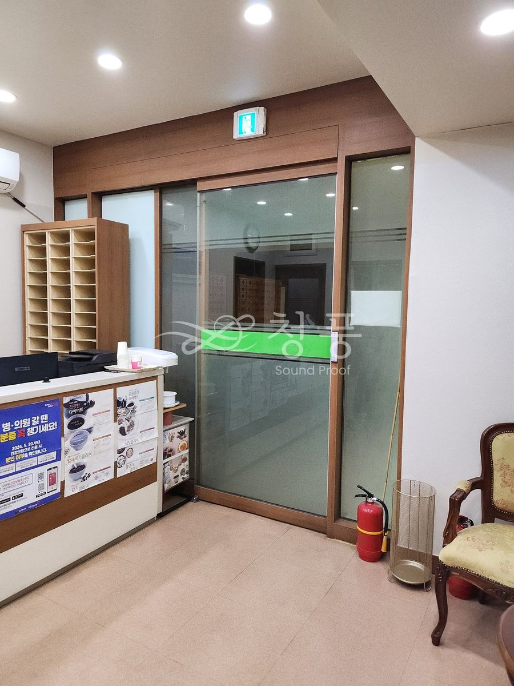
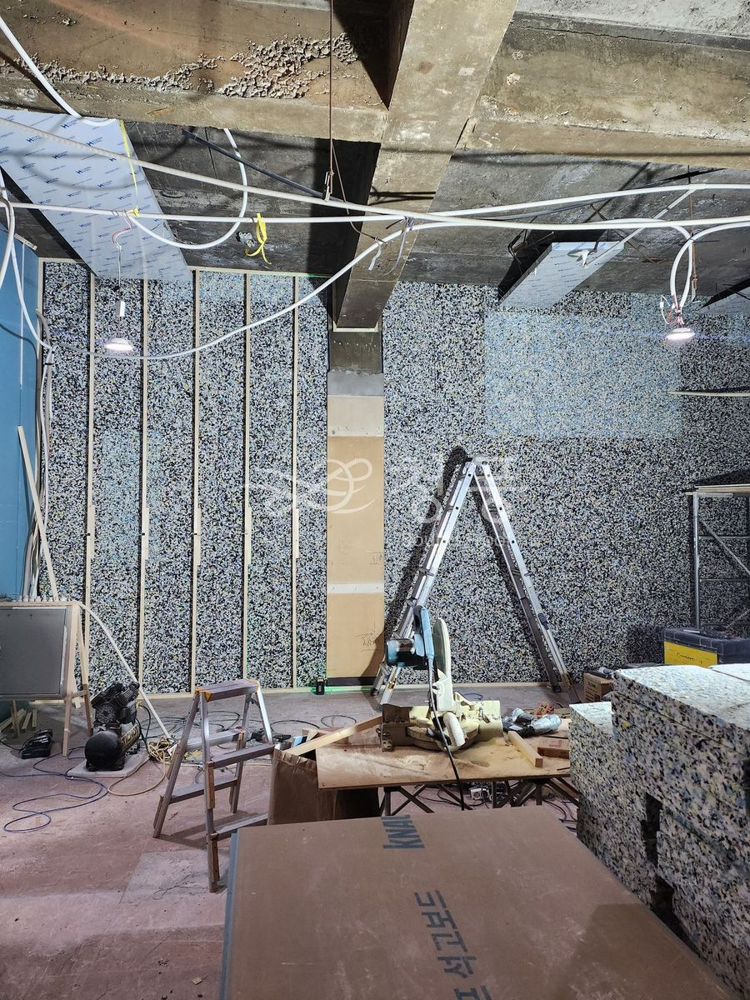
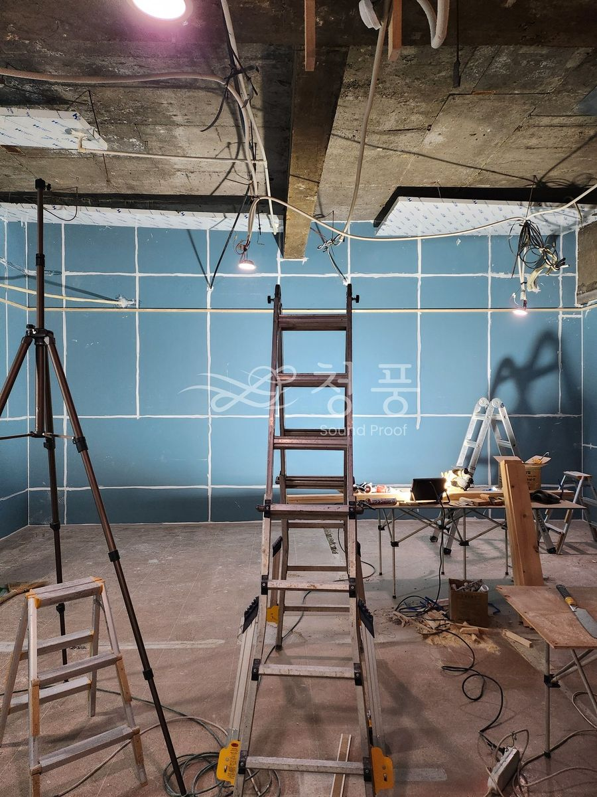
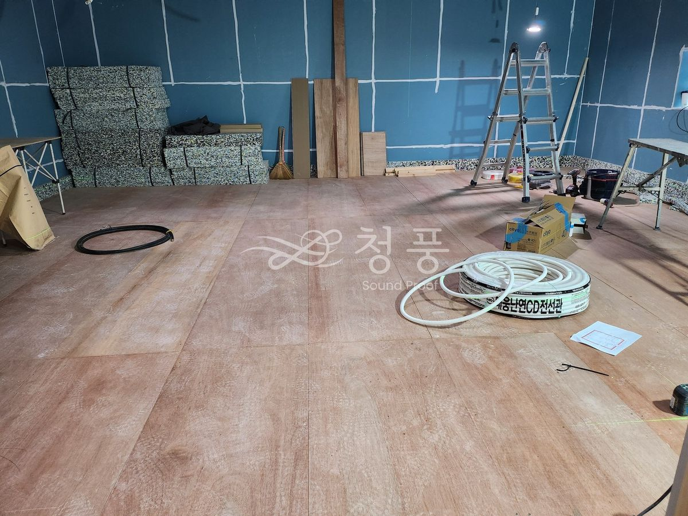
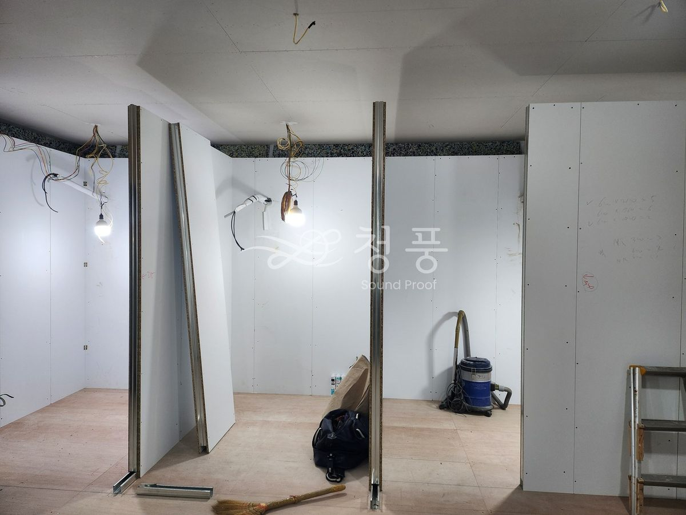
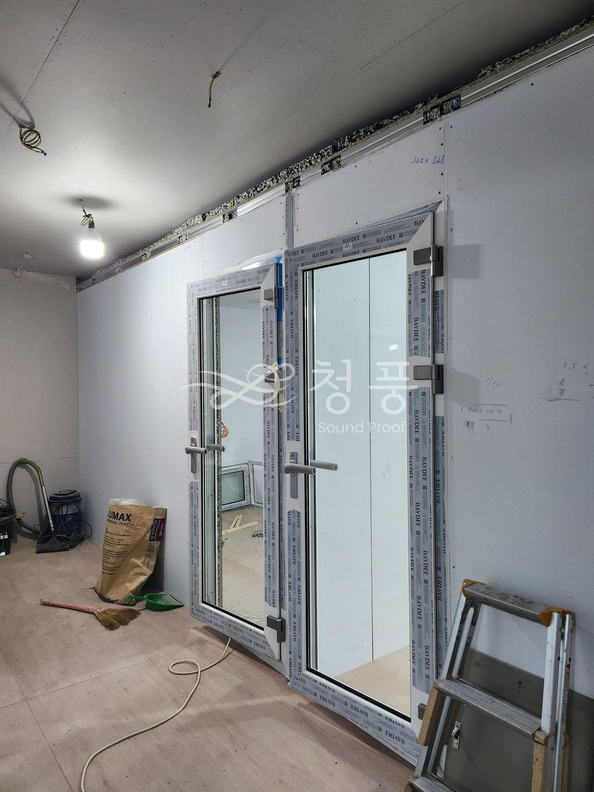
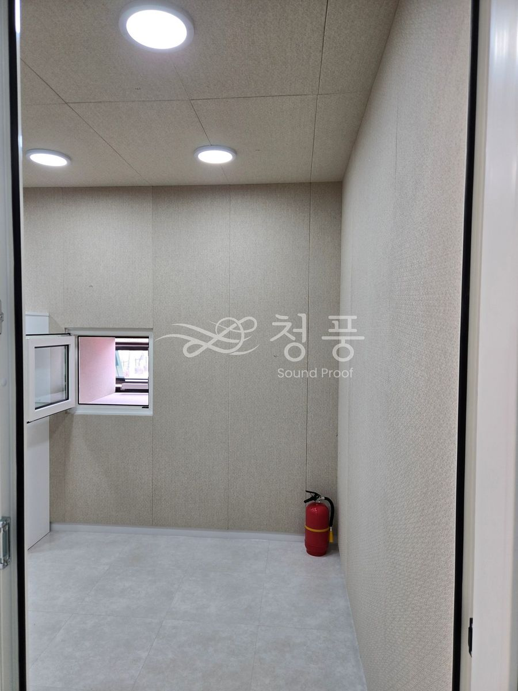
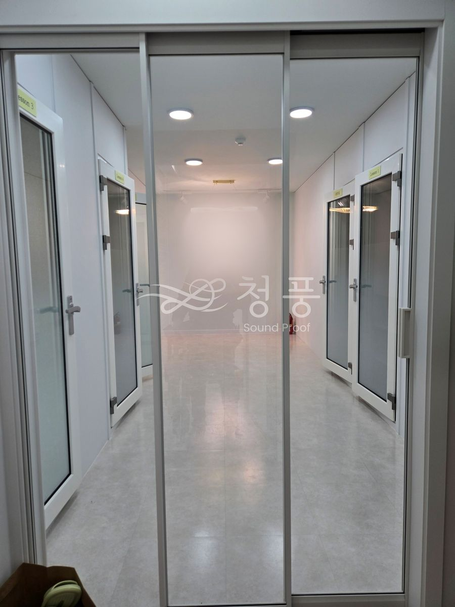

서울 서초 잠원동 · 반원상가
바로 옆이 스터디카페였습니다. 소리가 넘어가면 안 되는 쪽에 벽 두께를 몰아주고, 기초 방음벽에서 150mm를 띄워 안쪽에 패널 칸막이를 한 겹 더 세웠습니다. 벽 안에 벽을 하나 더 만든 구조입니다. 철거부터 전기·소방·냉난방·마감까지 전 공정을 맡았습니다.








문의
010-4867-4442
실측과 상담은 비용을 받지 않습니다. 방음문 한 짝 교체는 99만원부터이고, 기존 문 철거는 별도입니다.
상담부터 시공까지 보통 2~3주.
상담 → 실측 → 제작 → 일정 조율 → 시공 순서로 갑니다.
방음문은 치수를 받아 만드는 제품이라 대부분의 시간이 제작 기간입니다.